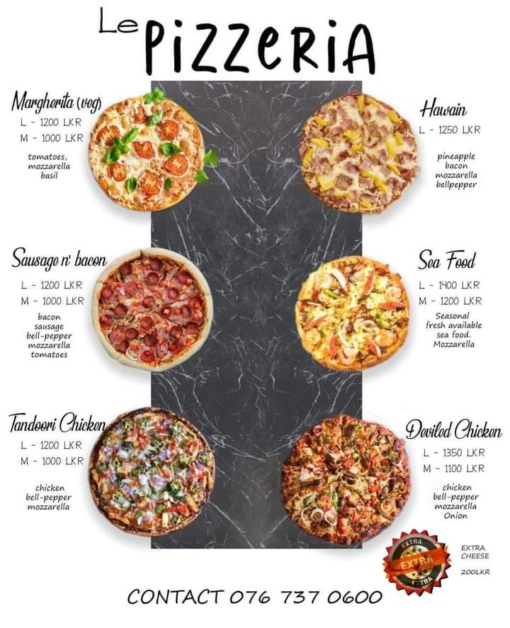
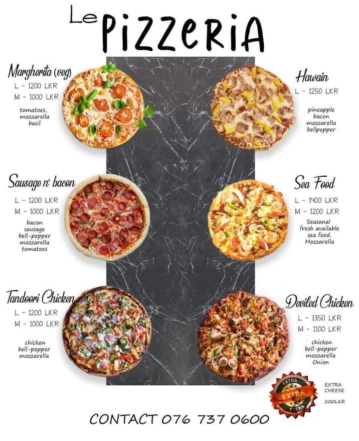

Since Steve Easterbrook became CEO of the company, McDonald's has streamlined the menu which in the United States contained nearly 200 items. The company has looked to introduce healthier options, and removed high-fructose corn syrup from hamburger buns. The company has removed artificial preservatives from Chicken McNuggets,[78] replacing chicken skin, safflower oil and citric acid found in Chicken McNuggets with pea starch, rice starch and powdered lemon juice.